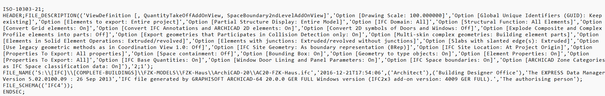
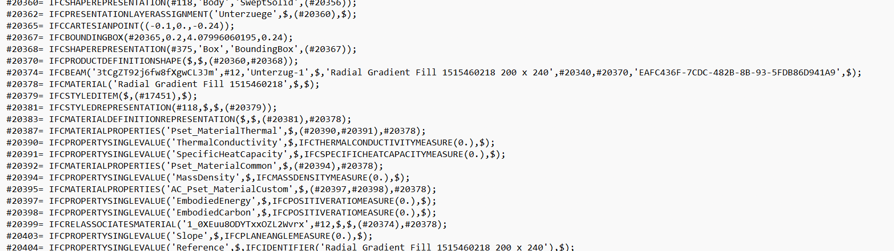
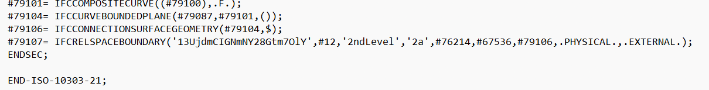

Module 3.3 opened this same file in a viewer and showed a clean tree, a house rendered in 3D, a beam with its own identity, a spatial hierarchy laid out for easy reading. All of that came from somewhere. This lesson opens the exact same file with nothing standing between you and it, no tree, no panels, just plain text, and ends with something genuinely useful: finding one specific thing yourself, in a file with over forty thousand lines, in seconds.
The file extension is ".ifc," but the structure underneath it isn't specific to IFC at all. buildingSMART's own technical documentation is direct about this: the STEP Physical File format is the most widely used way of exchanging IFC data in practice, and it is based on an existing international standard, ISO 10303-21, a clear text encoding method originally built for exchanging general product data, not building data specifically. IFC borrows this format rather than inventing its own.
Open the file in a plain text editor and it breaks into three parts. Right at the top:
ISO-10303-21;
HEADER;
FILE_DESCRIPTION(...);
FILE_NAME('...AC20-FZK-Haus.ifc','2016-12-21T17:54:06',('Architect'),('Building Designer Office'),...);
FILE_SCHEMA(('IFC4'));
ENDSEC;This is the header, and it's carrying facts you've already seen. The schema, the author, the exact save timestamp, all sitting here as plain text, the actual source of everything Bonsai's Project Overview panel showed you in 3.3.

After the header comes the data section, where nearly the entire file lives. In a typical building model, the large majority of these lines describe geometry rather than anything else, one academic analysis of a similarly sized public sample file found over 70 percent of entities were geometric. Every line follows the same shape: a number, an equals sign, an entity name in capitals, and a set of values in brackets.
The beam from 3.3 is still here, unchanged, at line 11,567 of this file's 44,259 total lines:
#20374= IFCBEAM('3tCgZT92j6fw8fXgwCL3Jm',#12,'Unterzug-1',$,'Radial Gradient Fill 1515460218 200 x 240',#20340,#20370,'EAFC436F-7CDC-482B-8B-93-5FDB86D941A9',$);The values match Bonsai's panel exactly, not similarly, identically. '3tCgZT92j6fw8fXgwCL3Jm' is the same GlobalId. 'Unterzug-1' is the same Name. This line is the object. What 3.3 showed you was simply a friendlier way of displaying this exact text.
Around it, other lines describe things connected to this beam, its material, its property references, even the relationship tying the material to it. None of it is grouped together or indented to show that connection. It's just more numbered lines, sitting wherever the exporting software happened to place them.
Notice too that there are no field labels anywhere. No "GlobalId:" written out, no "Name:" buildingSMART's own IFC documentation confirms this is by design, describing it as a clear-text encoding of entity instances in which attribute values are provided as an ordered sequence of unnamed values. Position is what carries meaning here, first slot is always GlobalId, third slot is always Name, for every IFCBEAM in every IFC file anywhere.

Inside that same line sit a few values that aren't text and aren't plain numbers either, #12, #20340, #20370. These are references, called instance names by the ISO standard itself, and each points to a different numbered line elsewhere in this file. This lesson won't follow one yet, that's what 3.5 is for. For now, simply notice they're there.
The Project → Site → Building → Storey structure that appeared so cleanly in Bonsai does not exist anywhere in this file as a shape. No indentation, no nesting. It's a flat list of numbered lines, one after another, in whatever order the exporting software wrote them.
The hierarchy you saw wasn't saved into the file as a tree. The viewer rebuilt it from the references every time it opened the file.
Scroll to the very bottom and the file closes with almost no ceremony:
#79107= IFCRELSPACEBOUNDARY('13UjdmCIGNmNY28Gtm7OlY',#12,'2ndLevel','2a',#76214,#67536,#79106,.PHYSICAL.,.EXTERNAL.);
ENDSEC;
END-ISO-10303-21;One last data line, the section closes, and two lines later the file is finished.

Here's why all of this actually matters, not as an abstract point, but as something you can do right now.
This file has 44,259 lines. Nobody scrolls through that looking for one beam. But you don't need to. You already know something useful about it from 3.3, its Name, "Unterzug-1," and its GlobalId. Both are just text, and a flat list of text can be searched. Open the file in any editor and use its search function, Ctrl+F on most of them, then search for Unterzug-1. One result comes back: line #20374, the exact beam, found in seconds, no scrolling, no tree to navigate.
This is the real, practical reason any of this is worth knowing. A viewer shows you an interpretation of a file, a rendering built for readability. When something looks wrong in that rendering, a missing material, an odd property, an element that shouldn't be there, the file itself is the only place to check whether the problem is real or whether the tool is misreading it. And now you know how to get there directly: not by browsing a structure that doesn't actually exist on disk, but by searching for the one piece of text you already know, and landing exactly where you need to be.
This lesson showed the shape of the file and how to find your way to any specific point in it by search. The next lesson goes further, teaching you to actually read a line's grammar and follow one of its references by hand, proving that the tree Bonsai drew for you is really just this, thousands of lines quietly pointing at each other, one search away from being checked yourself.
Comments use a free GitHub account — takes under a minute to create, and keeps discussions spam-free and permanently archived.